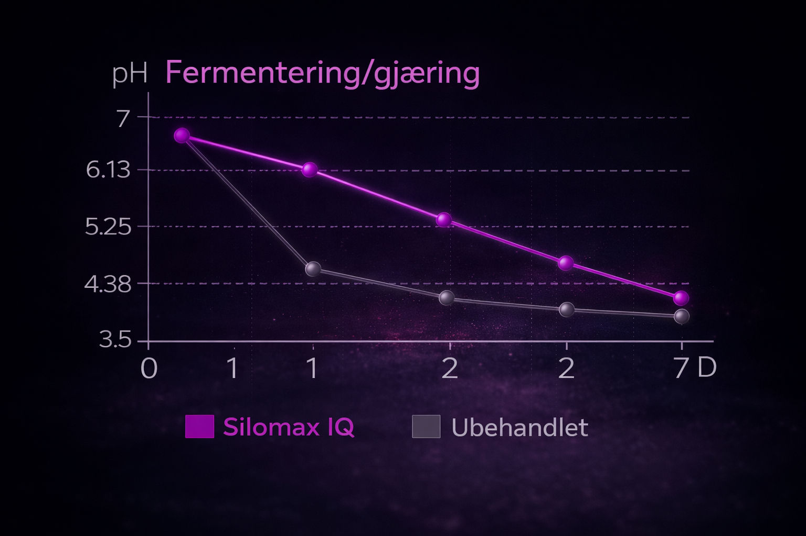
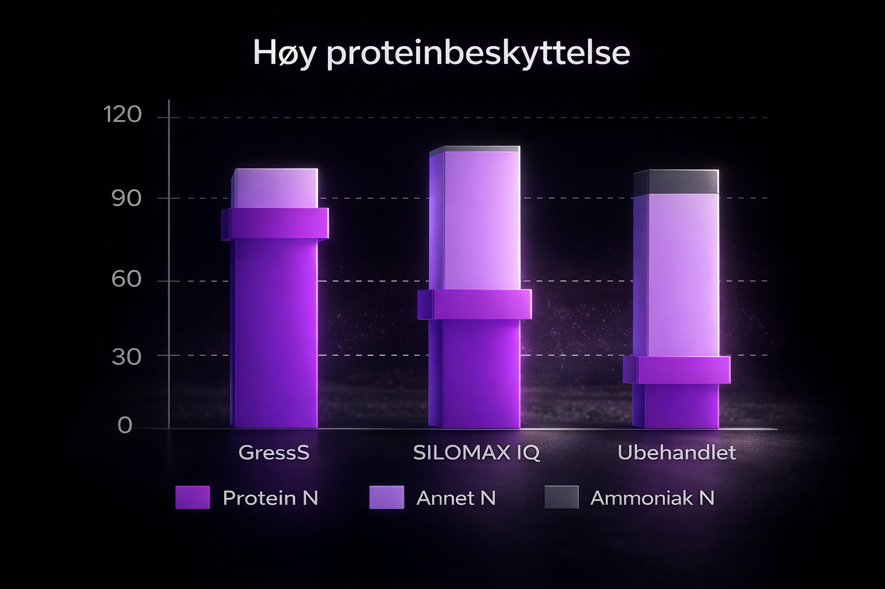

Silomax STABIL
- Optimalt gjæringsmønster
- Bedre fordøyelighet og mer energi
- Betydelig bedre stabilitet etter åpning av silo
- Fås i esker med 12 poser til 50 tonn
- Kan anvendes i økologisk produksjon
En naturlig fermentering av gress kan ta fra 2-6 uker.
SILOMAX IQ vil fermentere gresset på 1-2 dager.

Forsøk viser at SILOMAX IQ kan erstatte 1,39kg kraftfôr, og gir 1,1 liter mer melk per dyr og dag mot kontroll.
SILOMAX IQ reduserer proteinnedbrytning i ensilasje.

Mer protein bevares – mer energi og melk fra samme fôr.
Bruksanvisning

Mål opp dose
Bland med vann


Rist i 30 sek
Tilsett i siloen